Music · Gamification & UI System
Giving musicians a reason to come back and jam.
Djaminn is a free music collaboration app where singers, instrumentalists, and producers layer tracks together. Downloads were growing, yet retention stalled on inconsistent UI foundations. Working with the founder and UX lead, I helped build a new Material 3 design system and craft the V3 interface across gamification, contests, open jams, and core recording flows.
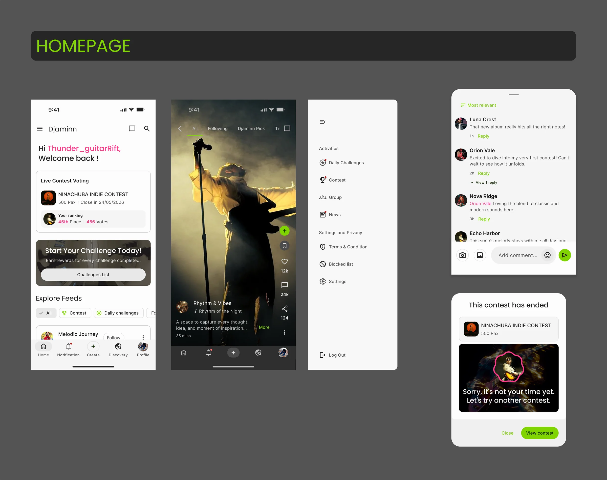
42 overlay states built on Material 3 Expressive tokens for developer handoff.
Mapped with Bartle player types so every visual reward supports retention.
End-to-end UI flows from lobby and multitrack studio to voting and winners.
01 · Context
A social network made only of music.
On Djaminn, a musician records a part on their phone, shares it to the feed, and collaborators worldwide layer vocals or instruments on top to build a finished track together.
The founder's vision was clear: turn solo bedroom practice into collaborative momentum where amateurs are inspired by pros and every session sparks another jam.
iOS, Android & Web
Free to create & jam
Music Makers & Talent Scouts
Record, layer a duet, share
02 · Problem
Growing downloads, leaky retention, and inconsistent UI.
The founder wanted gamification and social features to keep musicians coming back. The challenge was shipping them while simultaneously repairing fragmented visual and interaction foundations.
Drop-off after first sessions
Downloads grew steadily, but once users recorded and shared a clip there was little structured pull to return the next day.
No cohesive reward system
Without a gamification framework, badges or coins risked feeling bolted onto screens rather than driving musical creation.
Fragmented UI foundations
Core recording, editing, and publishing flows varied screen to screen, creating friction for both users and developers.
03 · My role
UI craft, Material 3 system architecture, and developer handoff.
Design System Owner
Structured the Material 3 Expressive token library in Figma (#80D402 primary green, #FF3A8A pink, Poppins + Inter) across full Light and Dark modes.
Core & Feature UI
Designed high-fidelity screens for Home, Onboarding, Recording, Duet, Editing, Contests, Open Jams, Daily Challenges, and Coin Shop.
Handoff & Prototyping
Translated Figma V3 Ready for Dev frames into clickable prototypes and an 83-screen interactive HTML handoff reference across 8 iPhone sizes.
04 · Approach
Research, journey, wireframes, and system-first UI.
Insights drew from desk research, competitive audits of WeSing, Smule, and StarMaker, and user personas covering both Content Creators and Listeners/Talent Scouts. Every new feature moved through flow logic before touching pixels.
Research
Audited music-social competitors and aligned on Creator vs Listener personas.
Journey
Mapped onboarding step by step to expose drop-off points and dead ends.
Wireframes
Validated multi-phase logic for contests, open jams, and daily loops.
Design System
Standardized tokens, states, buttons, sheets, and dual Light/Dark modes.
High-Fidelity UI
Crafted visual hierarchy for audio controls, video feeds, and reward cards.
Dev Handoff
Documented edge states, orientations, and clickable flows for engineering.
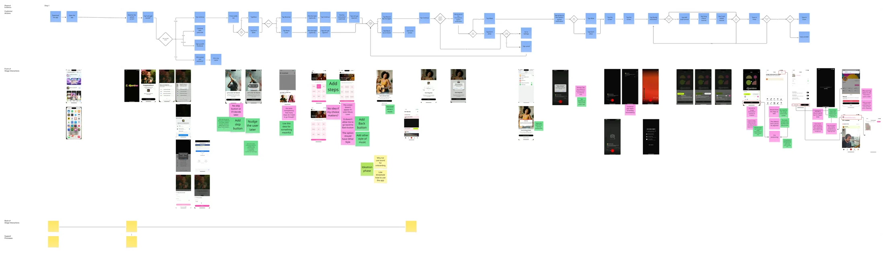
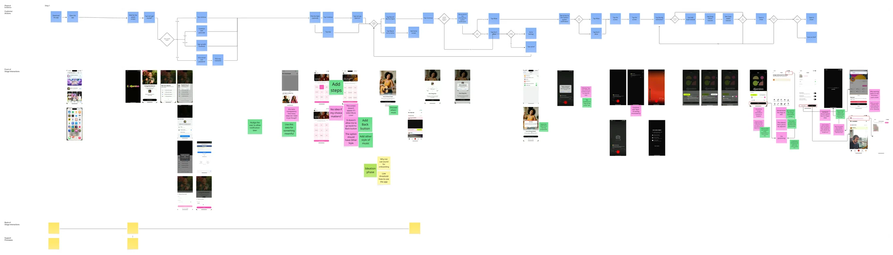
05 · Gamification & UI System
Strategy first, visual system underneath.
Gamification ideas were evaluated against Octalysis's core drives and Bartle's four player types before designing UI components. Visually, the Material 3 Expressive system paired energetic lime (#80D402) and pink (#FF3A8A) accents with clean neutral surfaces so music video thumbnails and studio controls stay legible in both Light and Dark themes.
| Drive | Octalysis Core Drive | Applied in Djaminn UI |
|---|---|---|
| CD2 | Development & Accomplishment | Streak progress bars, musician levels, contest ranking cards, and profile mastery. |
| CD3 | Empowerment of Creativity | Multitrack studio, camera orientation controls, duet layering, and open jam lobbies. |
| CD5 | Social Influence & Relatedness | Collaborative tracks, live community voting, comments bottom sheets, and artist discovery. |
| CD6 | Scarcity & Impatience | Time-boxed contests, daily refresh challenges, and coin-gated studio perks. |
| CD7 | Unpredictability & Curiosity | Discovery feed spotlights and spontaneous open jam bandmates. |
| CD8 | Loss & Avoidance | Visible daily challenge streaks and saved recording drafts awaiting publish. |
Four player archetypes balanced in one interface
Achievers
Contest leaderboards, clear progress indicators, and role mastery badges.
Socialisers
Duets, open jam lobbies, threaded comments, and group collaboration.
Explorers
Discovery feeds, daily creative prompts, and cross-genre collaborators.
Competitors
Friendly head-to-head contest voting with transparent top-three rankings.
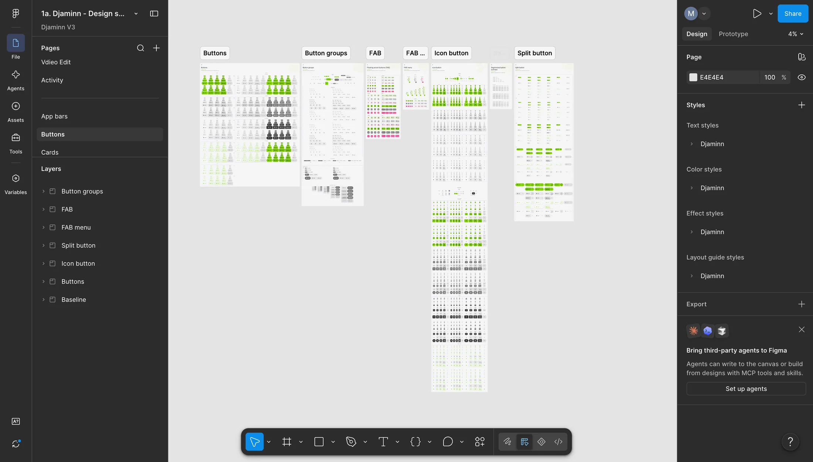
06 · Key solutions
What shaped the visual and interaction design.
1. Fix the recording foundation before layering features.
Adding gamification on top of inconsistent camera and studio screens would only compound confusion. We rebuilt the core journey across solo recording, duet layering, video timeline editing, and publishing on one shared component kit.
For engineering handoff, camera specs covered every recording state, microphone volume picker, vertical/horizontal/duet layouts, and an inline first-time tutorial guiding newcomers smoothly to their first published track.
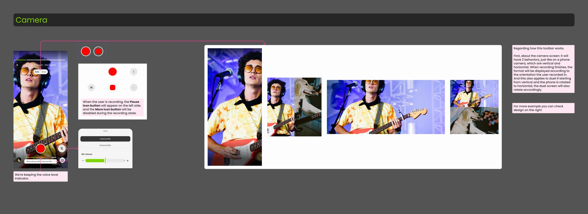
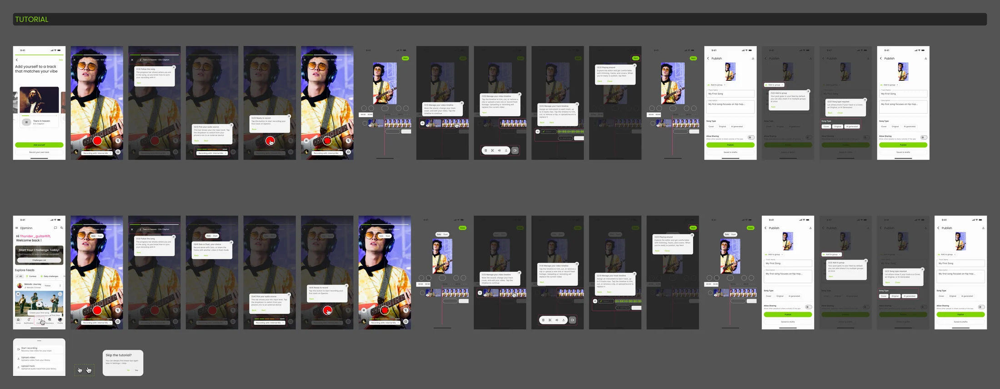
2. Give musicians weekly rituals through Contests and Open Jams.
Basic record-and-share tools lacked urgency. Contests introduce a clear creative goal, submission deadline, and community vote; Open Jams place musicians in a shared lobby where each participant picks an instrument and builds one track in turns.
Every phase was mapped before UI polish: open entry, voting with ticket limits, drafts, rule edge cases, and winner announcements, serving both submitting creators and voting listeners or talent scouts.
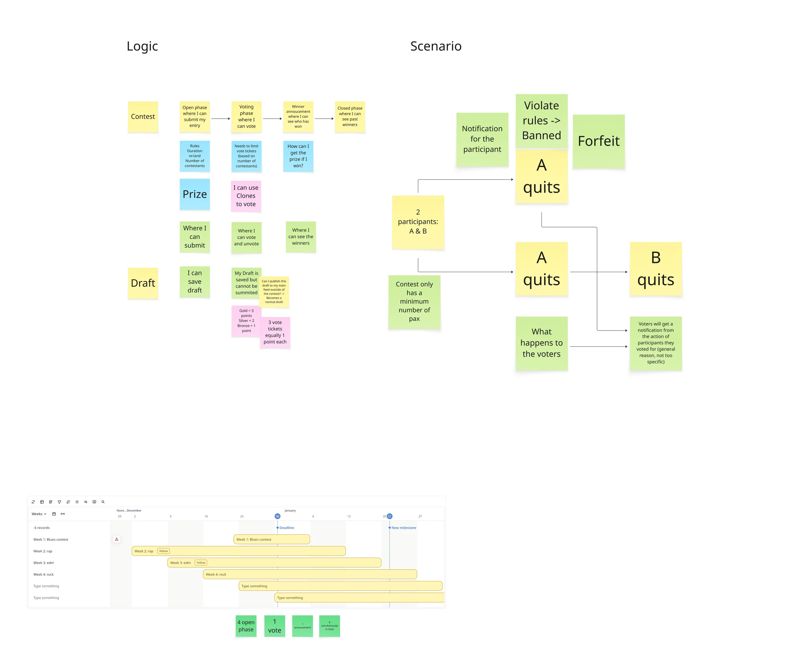
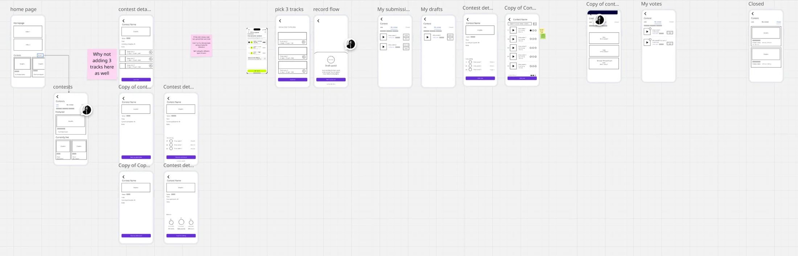
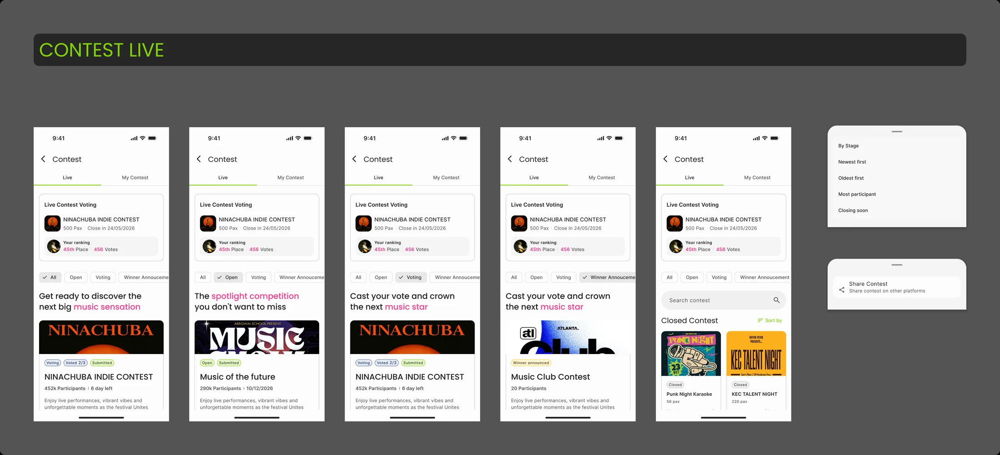
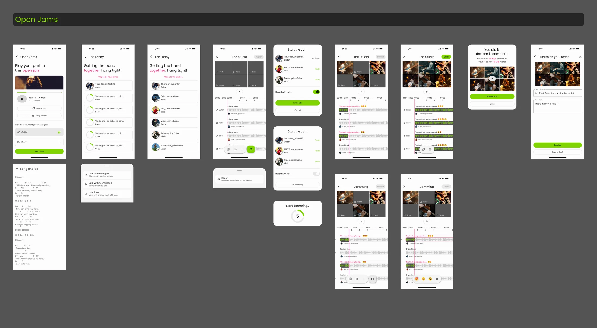
3. Tie daily rewards to a balanced, prioritized economy.
Daily Challenges translate long-term retention into bite-sized sessions: three fresh tasks with clear progress meters and an immediate daily reward.
Every mechanic was plotted on an impact-versus-effort matrix with the founder so high-impact, low-effort wins (daily challenges, first-jam flow, open jams) shipped before heavier marketplace and subscription systems.
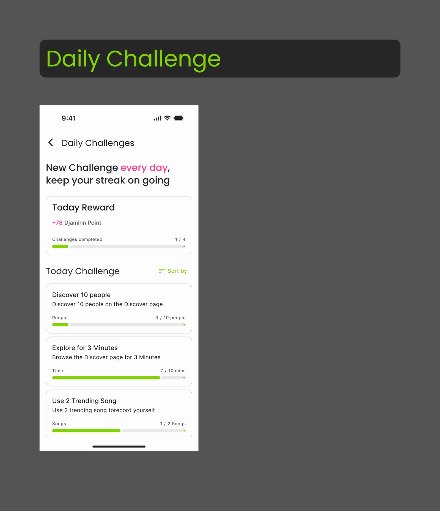
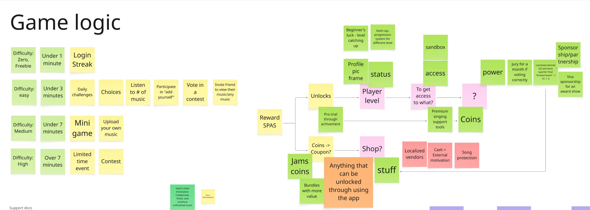
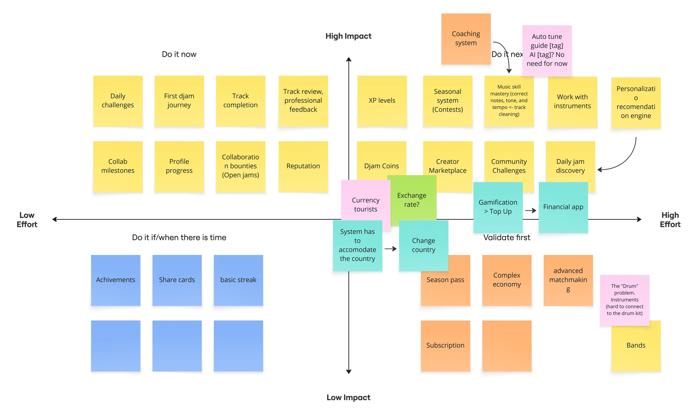
07 · Trade-offs
Fewer mechanics, cleaner execution.
Several heavy gamification ideas were parked early because developers were already stabilizing core audio and recording architecture.
Coin rewards were calibrated alongside meaningful Coin Shop sinks so currency stays motivating instead of inflating without purpose.
Rebuilding the Material 3 design system upfront took extra rounds with stakeholders, yet made every subsequent screen faster and cleaner to hand off.
08 · Outcome
A unified design system and core flows in build.
- Cohesive Material 3 Expressive design system established in Figma with Light and Dark theme parity.
- Core recording, duet, editing, and publishing flows handed off cleanly with full state specs and interactive HTML reference (83 screens, 42 overlay states).
- Contests, Open Jams, Daily Challenges, Coin Shop, and first-time tutorial designed and prioritized into phased delivery.
The V3 rollout is ongoing with engineering; retention metrics will be measured once the gamified loops ship live.
Interactive Prototype
Try the Djaminn V3 prototype.
Tap through the redesigned Discovery feed, full-screen music posts, and core flows directly in Figma.
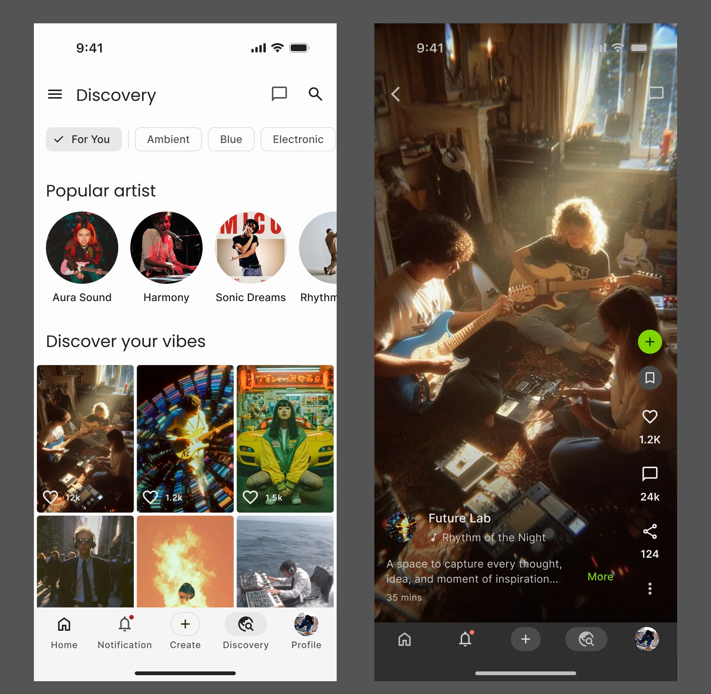
09 · Reflection
What I learned.
Systems unlock speed on complex consumer apps.
Investing in clean Material 3 Expressive tokens and dual-theme components kept 83 screens visually cohesive even as new features expanded.
Audio constraints shape visual UI.
In a music app, recording latency, orientation switching, and external microphone controls demand clear visual states, not decorative flourishes.
Strategy before decoration.
Aligning on player motivations and impact-effort priorities kept the UI focused on habits that matter rather than cluttering screens with unused badges.
BMW Online Service Booking: Putting AI where drivers actually need speed, from widget to full OSB.